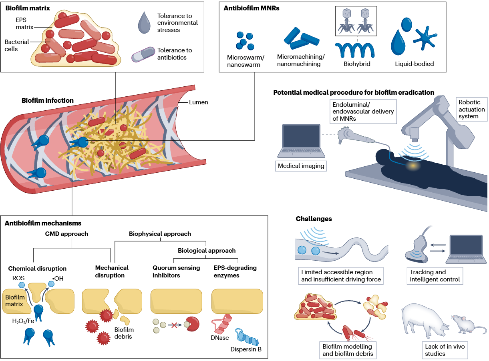

Ph.D. · Mechanical and Automation EngineeringThe Chinese University of Hong Kong · 2026
Advised by Prof. Li Zhang
01 / INFECTION CONTROL
Microrobots for biofilm removal
Developing microrobotic systems to combat biofilm infections in the body and on medical devices. The work combines magnetic actuation, mechanical disruption, and antibacterial chemistry, with an emphasis on accessing complex surfaces and confined spaces.
Selected work: liquid-bodied antibiofilm robots ↓Selected work: microrobots for biofilm eradication ↓